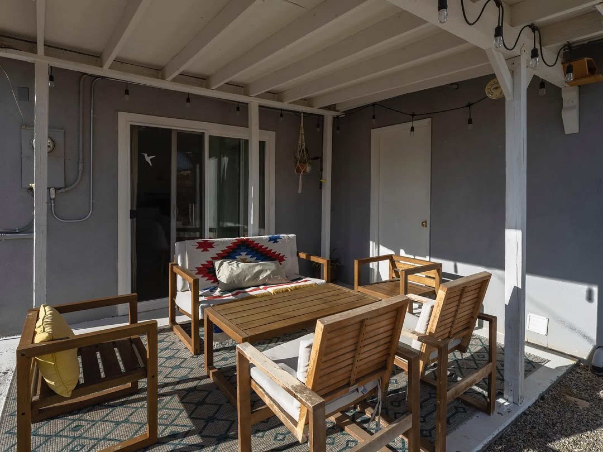
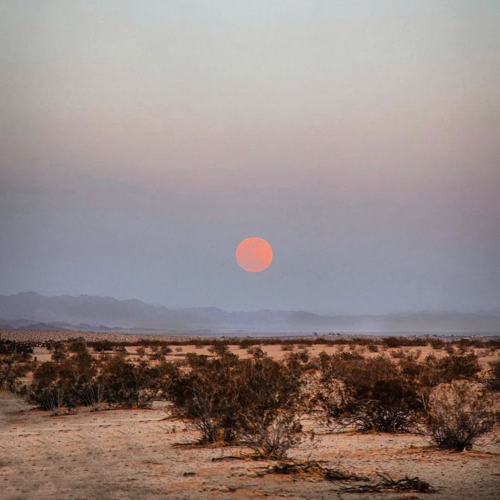
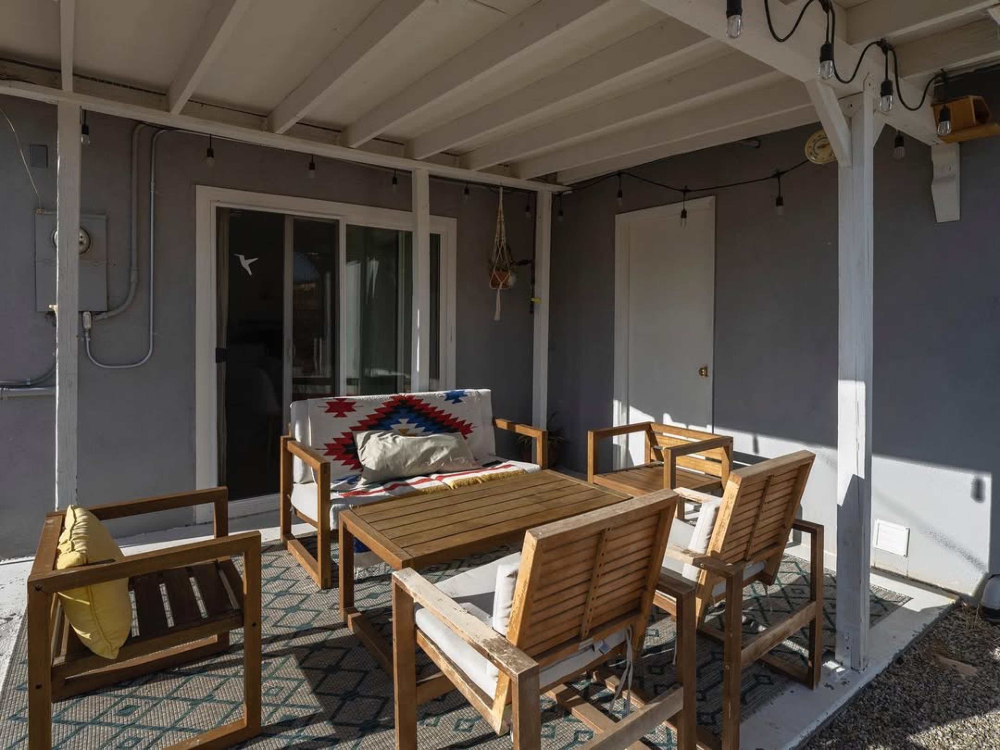
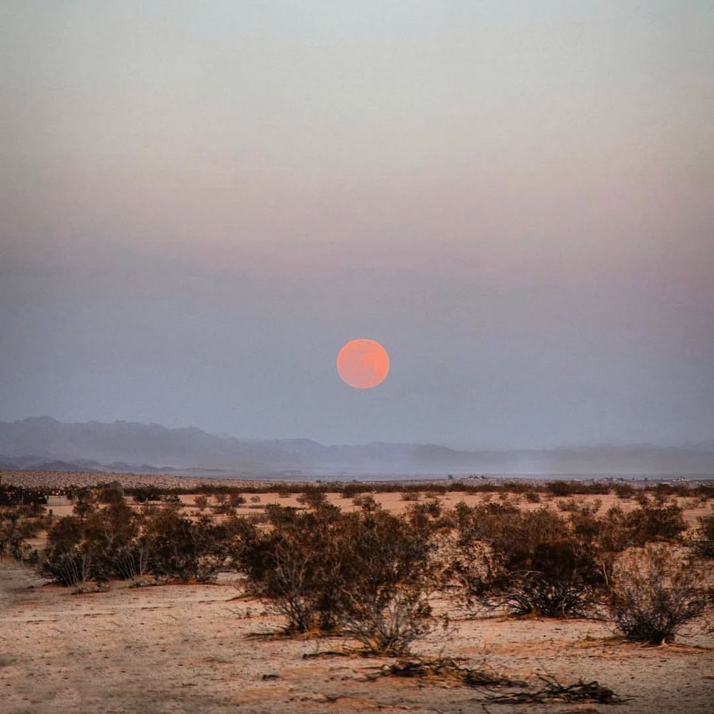

About The Desert Door
Founded in 2019, The Desert Door is a Rest + Resilience residency in Joshua Tree Village that supports interdisciplinary artists by easing the economic burden of making new work and offering a chance to germinate ideas, work thoughtfully, and get off the treadmill. Conceived as a small investment in cultural infrastructure and an alternative model of support, it is not a production residency. There are no required outcomes and no pressure to deliver a finished work, only time, quiet, and a well held place to recover attention, rebuild capacity, and reconnect to practice on human terms, with access to a dedicated studio with a sprung floor. Preference is given to artists who engage with dance or embodied practice in some way.

The space is especially designed for small teams who want to bond, connect, and spend time together cooking, listening, talking, rehearsing, and workshopping material in a rhythm that includes hikes, rest, and outings. The property includes a four bedroom, two bath home in a tranquil neighborhood one minute from the village center and about six minutes from the West Entrance of Joshua Tree National Park, with open land nearby that gives the days a sense of expanse. A cook’s kitchen invites creativity and care through shared meals. The house also holds a record collection and a library of art, dance, stage, photography, and archival materials. Beyond the main house, residents have access to a dedicated studio with a sprung floor for movement and embodied practice, plus a back casita for writing or solitude away from the group. Outside, there is a fire pit, big skies, and a claw foot tub for stargazing and soaking.

 



Joshua Tree is part of the offering, too. The village has a burgeoning artist community, and the desert landscape makes it easier to step outside everyday life and envision new possibilities. The Desert Door is a platform for art and experiences that brings together artists, writers, composers, media designers, creative technologists and thinkers to create projects in conversation with this place, and to make room for rich bonding time within artist teams.